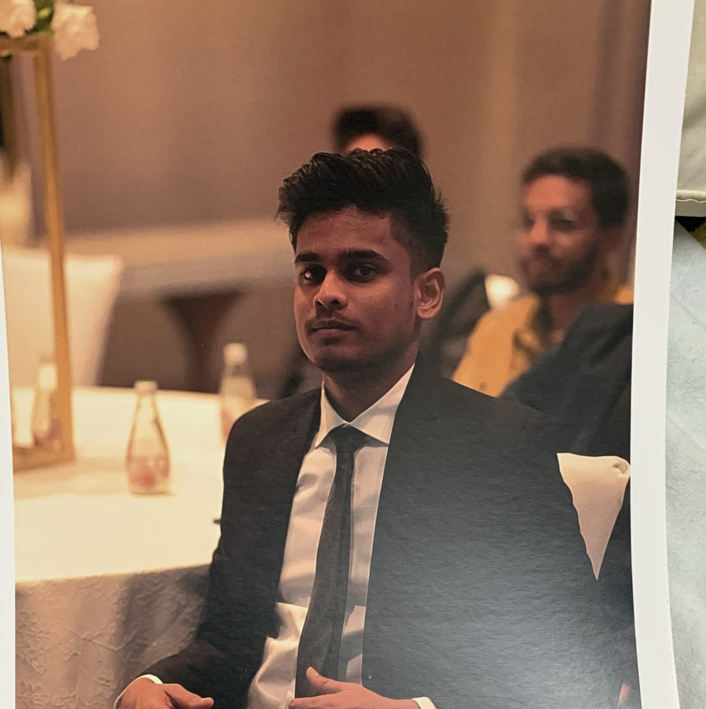

Varun Kumar Valaboju

Education
B. Tech - NIT Silchar - CGPA 7.51
12th - Sri Chaitanya - Pct. 98.5
10th Class - Kendriya Vidyala No.1 Uppal - CGPA 9.1
Work Experience
Associate Consultant
Full-Time at Oracle Financial Services Software - Bangalore, Karnataka. Duration: 21 months (Sep, 2021 - May, 2023).
- Coordination with developers, managers and stakeholders in all phases of software product development.
- Enhancement and Development of existing .NET Applications and desktop applications (WPF) using
Entity Framework concept.
- Worked on User-Interface development on three modules involving low key trading of Exchange-Traded
Fund of without much of user intervention, fixed-income securities issued by new companies, so users can
buy in future, and also worked on pricing tool with Bloomberg API calls.
- Tools used Visual Studio 2013, Fiddler, DevExpress, BitBucket, SourceTree.
UG Final-year Project
National Institute of Technology Silchar - Assam. Duration: 5 Months (Nov, 2020 - May, 2021).
-
Biggest personal achievement.
-
Conference Paper - V. Varun Kumar et al., "Modeling Indian Road Traffic Using Concepts of Fluid Flow
and Reynold's Number for Anomaly Detection.* Machine Vision and Augmented Intelligence Theory and
Applications, volume 796, 2021, pp 525-539.
-
Novel project in Computer-Vision and Machine learning field.
-
My role involved experimenting and implementing different computer-vision techniques using Python
-
Libraries, to enhance frame-processing and improve accuracy of computer generated results.
-
Tools used Spyder IDE (Python), Image-Processing Python Libraries.
Technical Skills
-
Programming: Java, Python, C#, C, SQL
-
Databases: MySQL, PL/SQL
-
Miscellaneous: MS Office, Fiddler, SourceTree, DevExpress 13.1
-
Tools/Platforms: Eclipse, Visual Studio 2013, IntelliJ IDEA
Certifications
Internship
At Bharat Sanchar Nigam Limited - RTTC, Gachibowli, Hyderabad. Duration: 2 weeks (10/06/2019 - 21/06/2019).
Topics learned:
-
Optical Fiber Cables - Joining & Fault tracing.
-
Broadband, Networking Equipment.
Contact me